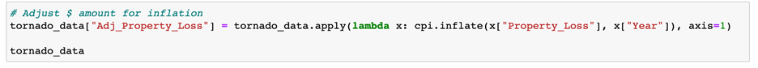
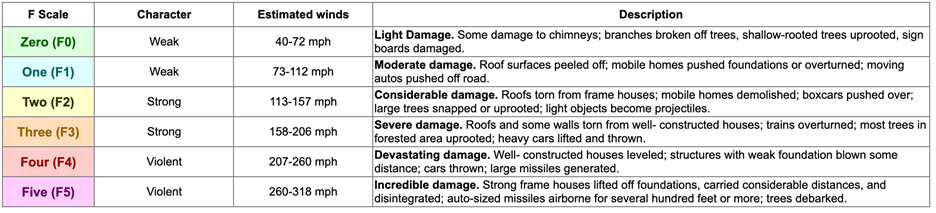

Exploratory Data Analysis
First, we had to find data on historical tornadoes. After scouring the internet, the group decided the National Oceanic and Atmospheric Administration was a trustworthy source. We downloaded the dataset from Kaggle and began our cleaning process. The dataset had 60,114 rows and 22 columns of historical tornado data from 1950-2015. A few helpful columns were Magnitude, Property Loss, Starting Lat-Long, Ending Lat-Long, and Census FIPS information. Our first step was to dig into the damage column. We quickly learned that the damage was given in ranges of estimates. To get to a numerical value, we decided to use the midpoint of these ranges:
After we had them translated, we decided to adjust for inflation using Consumer Price Index (CPI). We installed the CPI repo, imported the library, and ran this formula:
After finishing our damage variable cleanup, we moved on to the location. As a reminder, our first question was “What is the probability an area will get hit by a tornado?”. We did not define the area, but we knew we wanted to get as granular as possible.
We quickly discovered lat-long is too granular and the two variables are autonomous with each other-making predictions very difficult. Next, census tract. Census tracts are small, relatively permanent statistical subdivisions that’s purpose is to provide a stable set of geographic units for the presentation of statistical data. Census tracts generally have a population size between 1,200 and 8,000 people with optimum size of 4,000 people. Pretty neat, huh? We thought so too. However, it turned out to be too granular again.
Ultimately, we settled on a combination of zipcode and population density. We did a reverse geocode api pull from Big Data Cloud to add a column for zipcode and population density. We read this csv into a SQL database.
One more measurement to look into the : The Fujita Scale. The Fujita scale was created in 1971. As a reminder, our data goes back to 1950. So how do we account for the 20 years of missed data? Well, some people smarter than us had already gone back and reverse rated the f scale data for those 20 years. As a reminder from 5th grade social studies, the fujita scale looks like this:
Data Cleanup Complete! (existential question: is data cleanup every actually complete?)